Visual direction for the SwiftUI app in work unit U4. Each screen is a static mock with sample data. Use the bar at the top of a screen to switch light or dark, theme and accent colour.
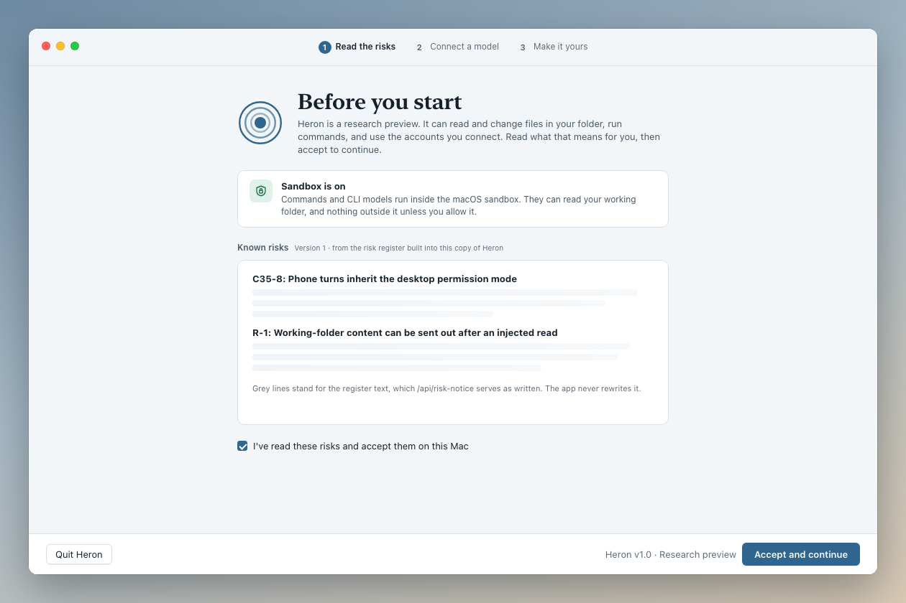
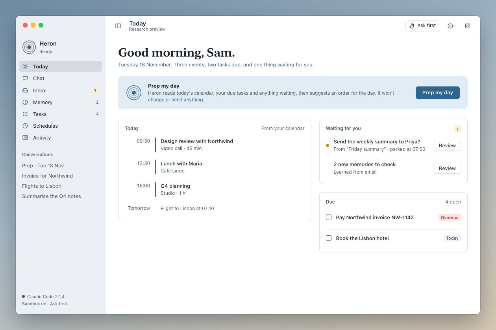
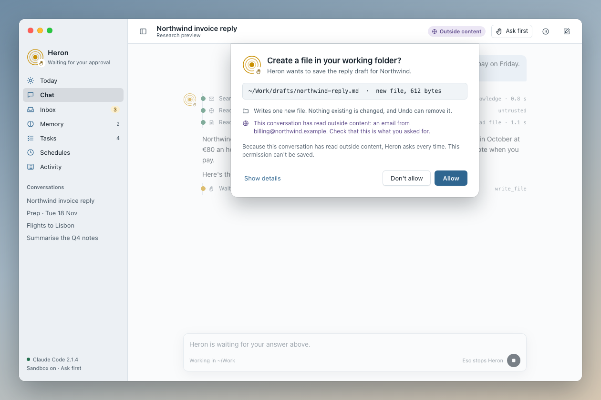
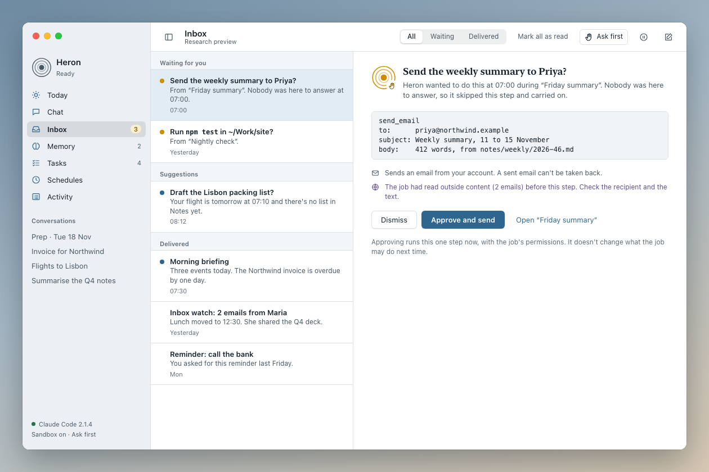
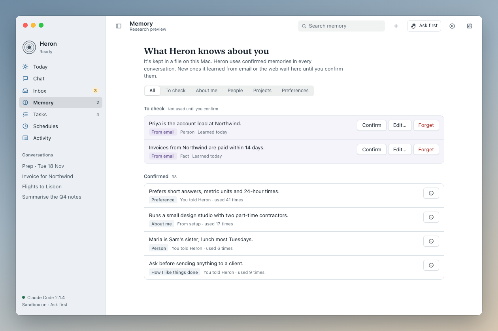
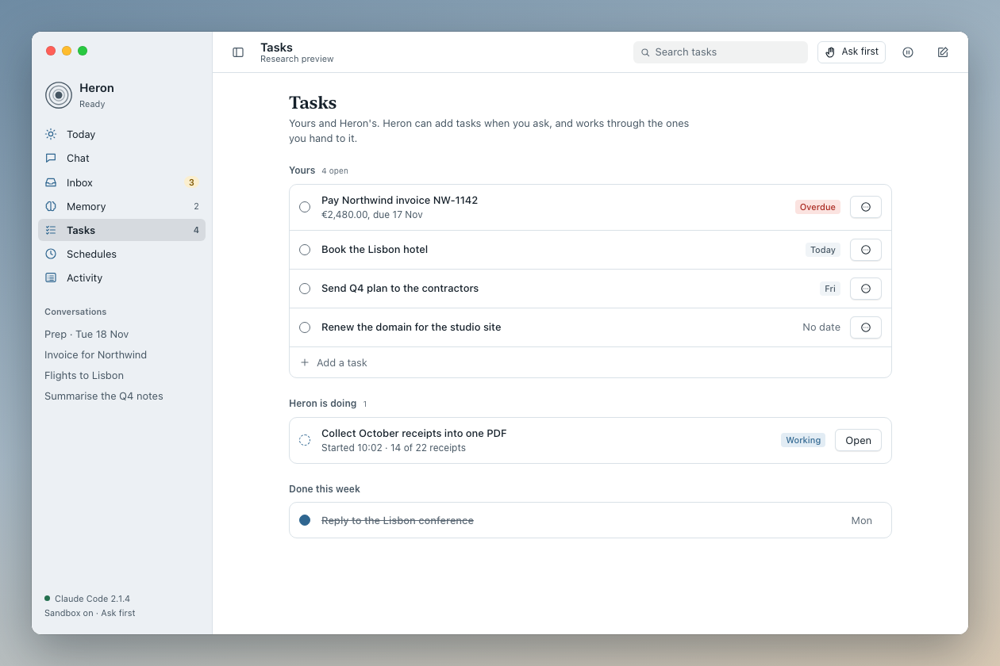
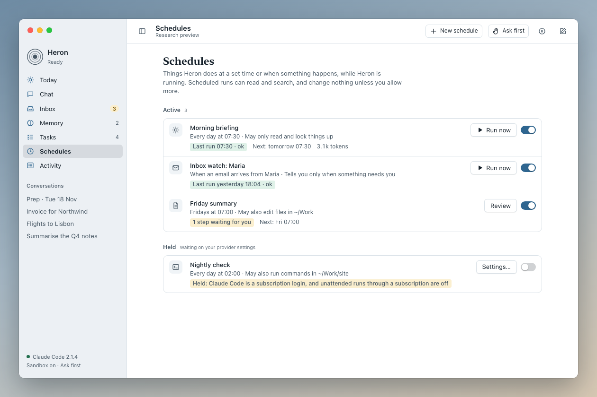
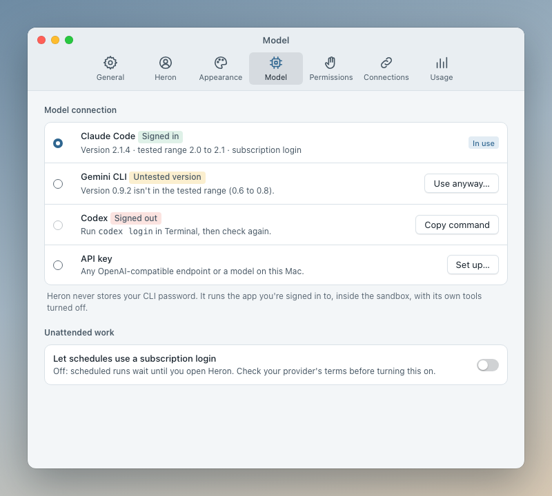
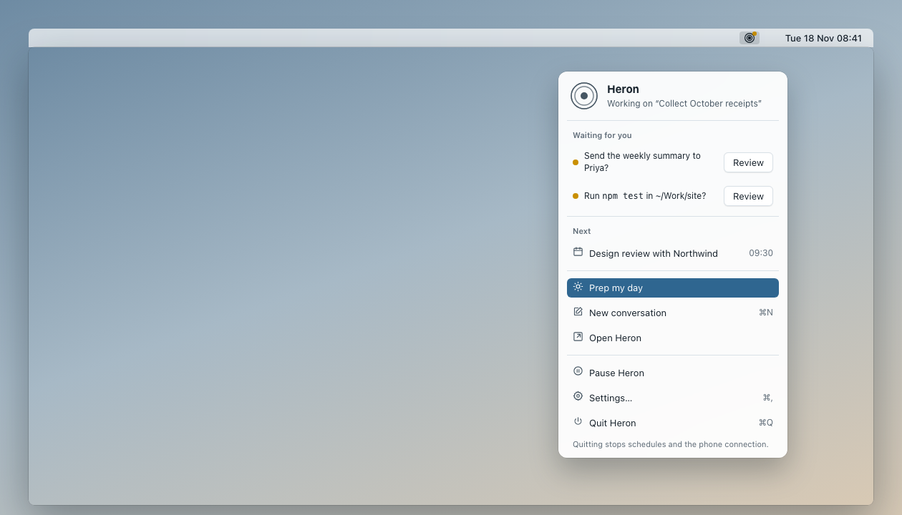
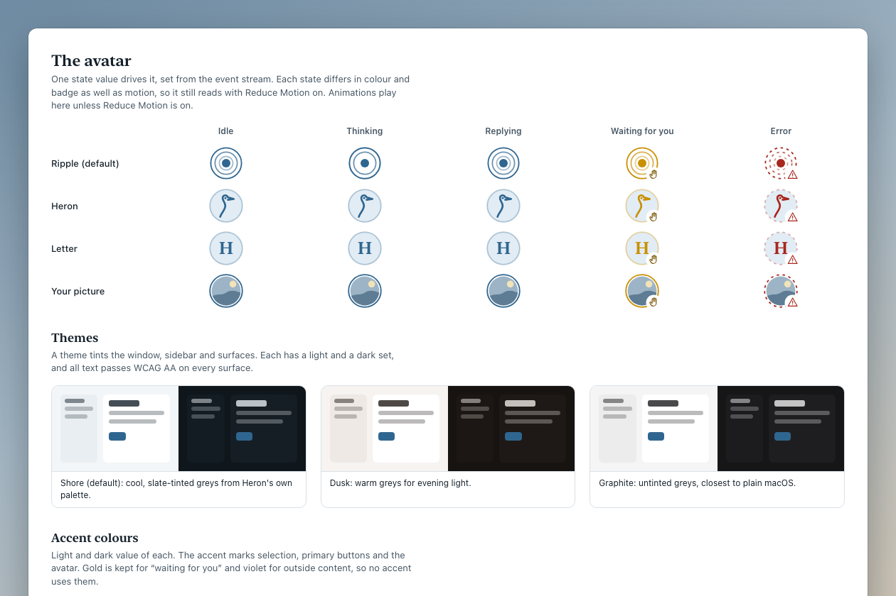
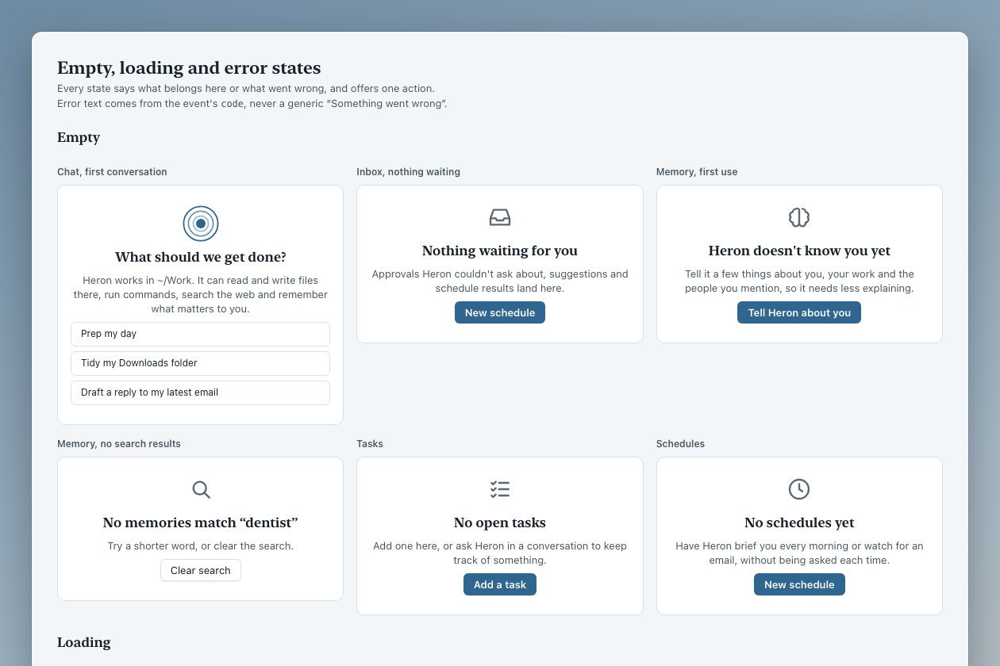
Mockups are HTML stand-ins for SwiftUI. Icons stand in for the SF Symbols named in the design doc, and the serif is New York (Georgia where a browser can't load it). Sample people and data are fictional.